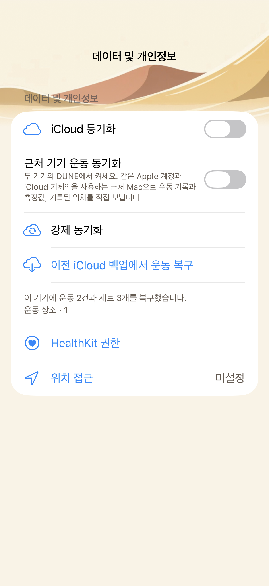
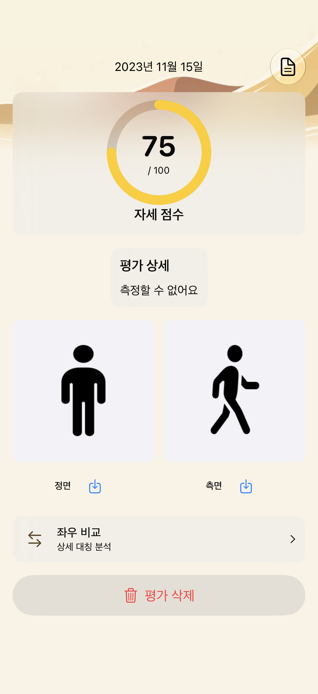
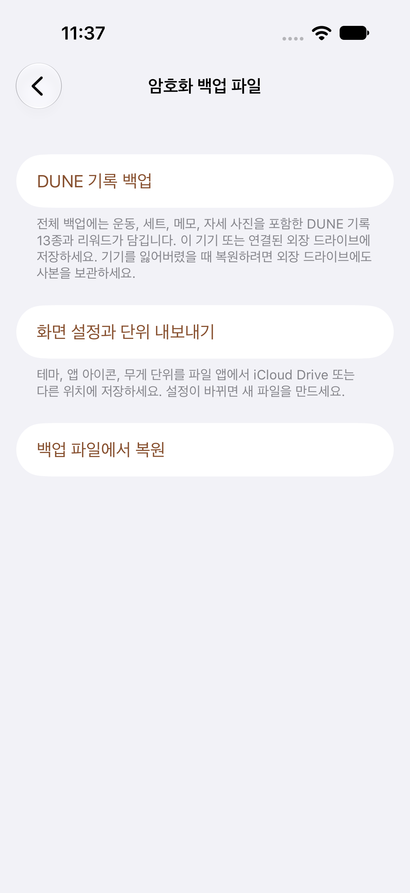
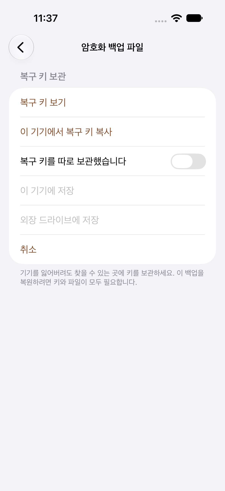
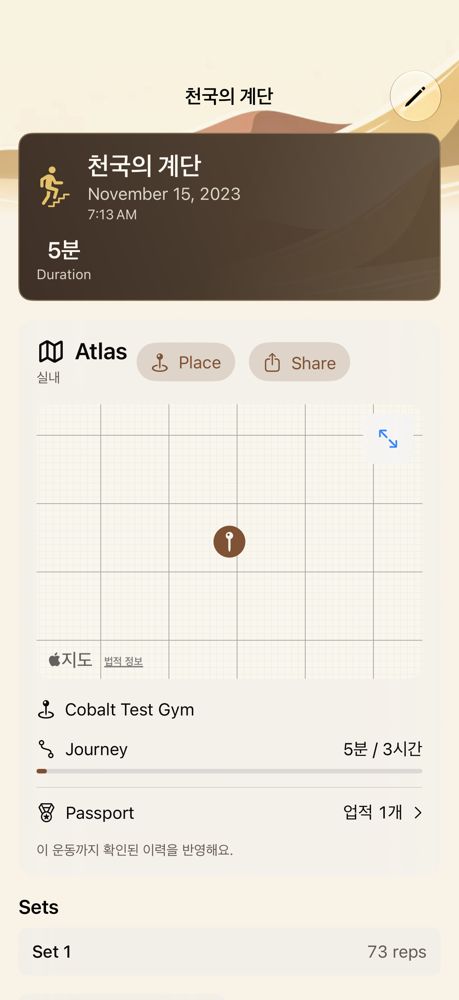

T02 · iCloud 동기화 동의

S01 · 데이터 및 개인정보
설정 캡처 원본은 검증 Mac의 XCTest 결과 번들에 보관했다.
S01 · 복구 완료

H07 · 자세 사진 원본

S01 · 암호화 백업 파일

S01 · 복구 키 보관

W28 · 열어 둔 운동에 장소 복원

2026년 11월 28일, 전용 iPhone 18 Pro 시뮬레이터 · iOS 27.2. 임시 저장소에서 UI 검사 두 건이 통과했다.
설정 캡처 원본은 검증 Mac의 XCTest 결과 번들에 보관했다.





일반 iPhone의 동의·설정 UI 검사 2건과 합성 복구 결과 검사 1건을 실행했다. 개인 iCloud에서의 내려받기, iPad·Duo의 배치, 저장소 열기 실패 화면은 이 검사 범위 밖이다.